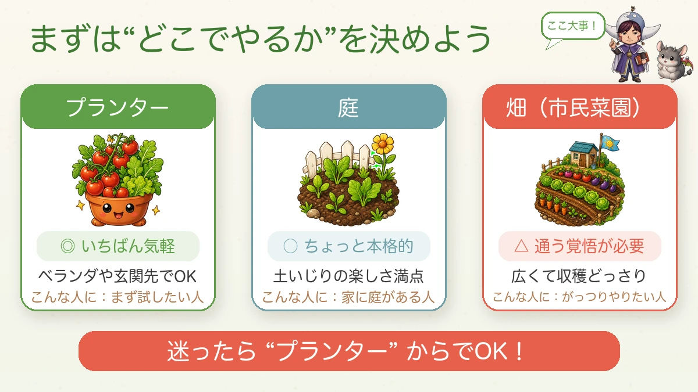
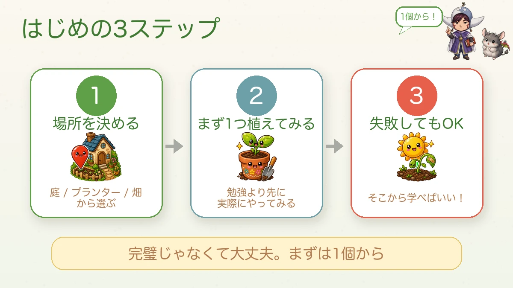
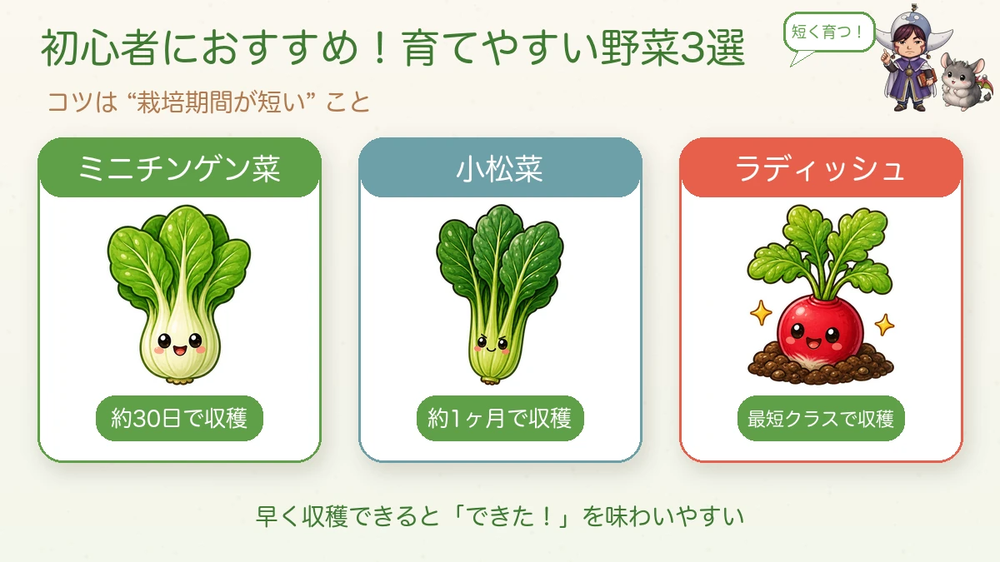
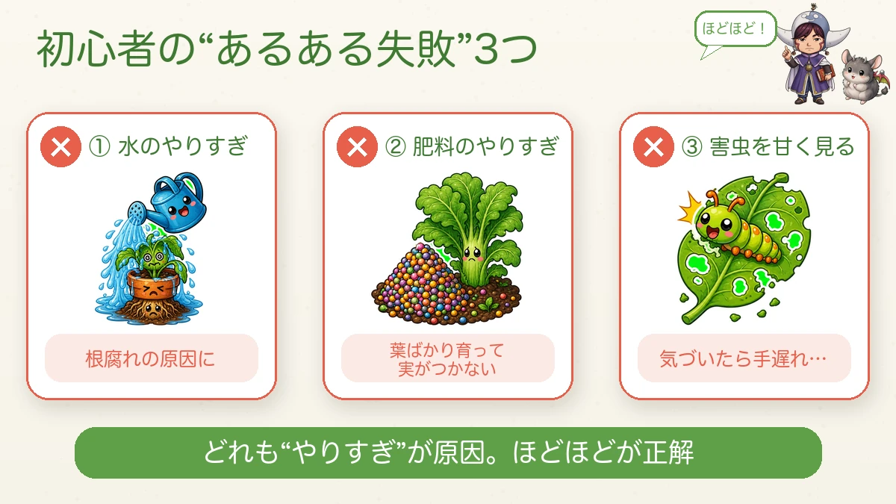
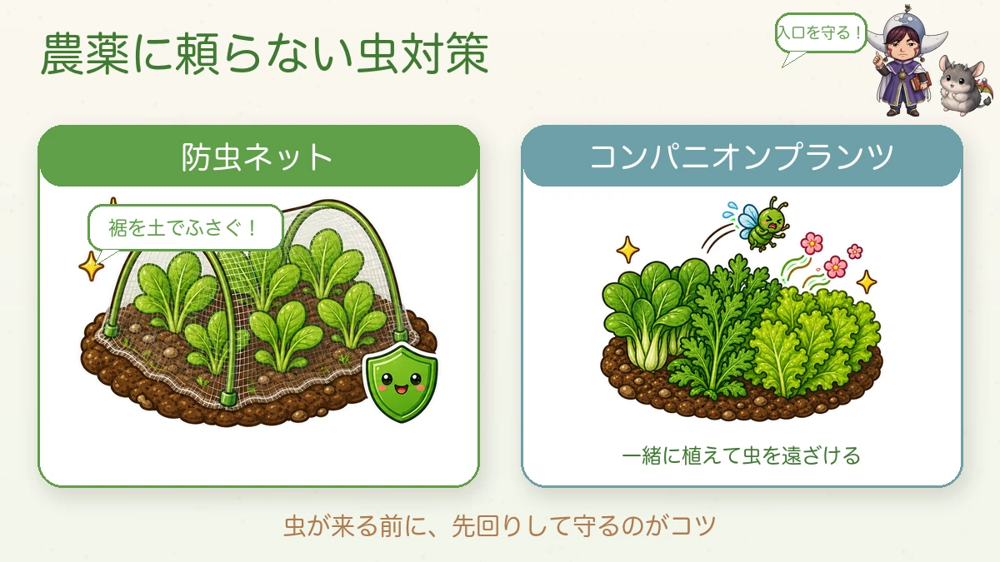

家庭菜園のはじめ方｜場所の選び方、最初の野菜、道具、土、水やり、初心者の失敗と防ぎ方
📖 この記事の目次
この記事で分かること
- 家庭菜園は、まず「どこで育てるか」を決めるところから始まります。プランター、庭、貸し農園（市民農園など）の3つから選びます。
- 最初の1つは、育てやすい野菜を選びます。育てやすさのいちばんの目安は、栽培期間が短いことです。
- 道具は、最初からすべてそろえる必要はありません。ホームセンターや園芸店で買えるものから、少しずつそろえていきます。
- 初心者がつまずきやすいのは、水のやりすぎ、肥料のやりすぎ、虫を甘く見ること、植える時期のずれなどです。先に知っておけば、多くは防げます。
- 有機・無農薬でも、防虫ネットや、一緒に植える野菜（コンパニオンプランツ）などの工夫で、野菜を育てることができます。
- 失敗しても大丈夫です。一つの失敗から、次に何をすればいいかが見えてきます。
「家庭菜園を始めてみたいけれど、何から手をつければいいのか分からない」。「すぐに枯らしてしまいそうで不安」。「道具をたくさんそろえないといけないのかな」。そんなふうに感じている方は、とても多いと思います。
でも、家庭菜園は、思っているより気軽に始められます。広い畑も、たくさんの道具も、最初はいりません。大切なのは、最初に決めることを決めて、小さく始めることです。
この記事では、これから家庭菜園を始める方に向けて、場所の選び方から、最初に育てる野菜、道具、土、水やり、初心者がつまずきやすいポイントまで、順番に書いていきます。このブログでは、有機・無農薬で野菜を育てることを大切にしているので、その考え方もあわせてお伝えします。
早見：家庭菜園のはじめ方（ひと目で分かる目安）
3つのステップ
- ステップ1：どこで育てるか（プランター、庭、貸し農園）を決める
- ステップ2：育てやすい野菜を、まず1つ植えてみる
- ステップ3：うまくいかなかったら、原因を考えて、次に生かす
最初に育てやすい野菜の例
- ミニチンゲン菜：約30日で収穫
- 小松菜：約1か月で収穫
- ラディッシュ（二十日大根）：とても短い期間で収穫
- ほかにも、リーフレタス、小かぶ、水菜など
初心者がつまずきやすいところ
- 水のやりすぎ
- 肥料のやりすぎ
- 虫を甘く見る
- 植える時期がずれる
- 苗を見て衝動買いし、植える場所が足りなくなる

まず決めるのは「どこで育てるか」
プランター
ベランダや玄関先など、ちょっとしたスペースがあれば始められます。いちばん気軽な方法で、「まず試してみたい」という方に向いています。土の量が限られるので、乾きやすく、水やりはこまめに必要になります。そのかわり、日当たりのよい場所に移動できるのが強みです。
大きめのプランターなら、レタスやチンゲン菜、かぶ、小松菜、ほうれん草などの葉物を、一緒に育てることもできます。市販の野菜用の培養土を1袋（25Lくらい）用意すれば、すぐに始められます。
プランターの選び方
プランターは、育てる野菜に合わせて、大きさと深さを選びます。葉物なら、横長で浅めのものでも育てられます。大根やにんじんなどの根菜や、トマトやなすなどの大きくなる野菜には、深くて土がたくさん入るものが向いています。土がたくさん入るプランターほど、乾きにくく、育ちも安定します。迷ったら、少し大きめのものを選んでおくと安心です。
庭
庭に少しでも土の場所があれば、そこを畑にすることもできます。プランターより土の量が多く、根が深く伸びられるので、育てられる野菜の幅が広がります。土を耕したり、たい肥を入れたりと、土づくりの楽しさも味わえます。
貸し農園（市民農園など）
地域の市民農園や、サポートつきの貸し農園を借りる方法もあります。広い場所で、たくさんの野菜を育てられ、収穫量もぐっと増えます。
ただし、畑に通う時間が必要です。畑が家から遠いと、暑い日や寒い日に足が遠のいてしまい、そのあいだに虫や草に負けてしまうこともあります。通える距離かどうかを、よく考えてから借りましょう。
迷ったら、プランターから
どれにするか迷ったら、まずはプランターから始めるのがおすすめです。失敗しても、やり直しが簡単だからです。小さく始めて、「楽しい」と感じたら、少しずつ広げていけば大丈夫です。
畑もプランターもなくても始められる
実は、畑もプランターもなくても、家庭菜園は始められます。網目状の書類トレイなど、底から水が抜ける小さな入れ物に土を入れて、ベビーリーフのタネをまく、という方法も紹介されています。タネも土も100円ショップでそろえれば、300円ほどで始められる、という例です。根元を残して上の葉だけを収穫すれば、また伸びてきて、何度か収穫できます。

はじめの3ステップ
ステップ1：どこで育てるかを決める
プランター、庭、貸し農園のどれにするかを決めます。ここが決まると、そろえる道具や、育てられる野菜、手入れのしかたが決まってきます。
ステップ2：まず1つだけ植えてみる
本や動画でずっと勉強するより、まず1つでいいので、実際に植えてみるのがおすすめです。芽が出て、葉が育っていくのを見ると、次に何をすればいいのかが、自然と分かってきます。
最初の1つは、育てやすい野菜を選びましょう。
ステップ3：うまくいかなかったら、次に生かす
枯れてしまっても、虫に食べられてしまっても、大丈夫です。なぜそうなったのかを考えれば、次は同じ失敗をしにくくなります。家庭菜園は、一度でうまくいかなくても、次の季節にまた挑戦できます。

最初に育てやすい野菜
育てやすさの目安は「栽培期間が短い」こと
育てやすい野菜を選ぶいちばんの目安は、タネをまいてから収穫までの期間が短いことだ、と説明されます。期間が短いほど、病気や虫の被害にあう前に収穫までたどりつけるからです。早く収穫できると、「できた！」という喜びも早く味わえます。
育てやすい野菜の例
- ミニチンゲン菜：約30日で収穫できる
- 小松菜：約1か月で収穫できる
- ラディッシュ（二十日大根）：とても短い期間で収穫できる
- リーフレタス：外側の葉からかき取って、長く収穫できる
- 小かぶ：小さいうちに収穫すれば早い
- 水菜、春菊：秋から冬に育てやすい
季節によって、向いている野菜が違う
秋は、葉物や根菜が育てやすい季節です。春は、じゃがいもがおすすめされることが多く、栽培も収穫も楽しい野菜です。5月ごろは、しょうがやさつまいも、落花生、ゴーヤなど、あまり肥えていない土でも育つ芋や豆の仲間が向いている、という説明もあります。
真夏のスタートは難しい
真夏は、暑さで野菜が弱ったり、虫が多かったりするので、初心者には難易度が高い季節です。始めるなら、春か秋がおすすめです。
プランターで葉物を育てる流れ
初めてのプランター栽培の例として、葉物を育てる流れを紹介します。
手順1：プランターに土を入れる
大きめのプランターに、野菜用の培養土を入れます。底にすき間のあるプランターなら、鉢底石はなくても大丈夫です。
手順2：タネをまく
レタス、チンゲン菜、かぶ、小松菜、ほうれん草などの葉物のタネをまきます。何種類かを一緒に育てることもできます。
手順3：押さえて、水をやる
タネをまいたら、土を手で軽く押さえます。タネと土がしっかりくっつくと、乾きにくくなり、芽が出やすくなります。そのあと、たっぷり水をやります。
手順4：間引きながら育てる
芽が出て込み合ってきたら、間引いて、株の間隔を広げていきます。間引いた若い葉も食べられます。1〜2か月ほどで、収穫できる大きさに育ちます。
最初にそろえる道具
最初は、最低限でいい
道具は、最初からすべてそろえる必要はありません。ホームセンターや園芸店、100円ショップで手に入るものから始めましょう。
プランターで始めるなら
- プランター（野菜用の深めのもの）
- 野菜用の培養土
- タネか苗
- じょうろ
- 園芸用のはさみ
底にすき間（スリット）のあるプランターなら、鉢底石がいらないものもあります。
庭や畑で始めるなら
- スコップ、くわ：土を耕す、畝を立てる
- 三角ホー：草を削る、畝を立てる、土をならすの3役がこなせる、と紹介されています
- レーキ：土の表面をならしたり、枯れ葉を集めたりする
- 鎌：支柱のまわりなど、狭いところの草刈りに
- 収穫ばさみ：力がいらず、かたいヘタも切りやすいものが便利
- 収穫物を入れるかご
無農薬なら、防虫ネットを
有機・無農薬で育てるなら、防虫ネットはぜひ用意しておきたい道具です。網戸のような細かい網を、曲がる支柱で野菜の上にトンネルのようにかぶせます。幅180cmくらいのネットなら、幅60cmくらいの畝をすっぽりおおえる、と説明されます。ネットを留めるクリップは、さびにくいプラスチック製が便利です。
防虫ネットの張り方
- 畝の両端と、1mくらいの間隔で、アーチ型の支柱を差す
- 支柱の上から、防虫ネットをかぶせる
- ネットをクリップで支柱に留める
- すそは、レンガやピン、土をかぶせて、すき間をふさぐ
曲がる支柱には、アーチ型の支柱のほか、安くて収納しやすい細いポールのようなものもあります。防虫ネットは、100円ショップでも3〜5mくらいの短いものが売られているので、プランターや小さな畝なら、それで十分なこともあります。
土づくり
プランターなら、培養土でOK
プランターで始めるなら、市販の野菜用の培養土を使えば、土づくりはほとんどいりません。
庭や畑の、有機の土づくり
庭や畑で、有機の土づくりを始める流れとして、次の3つのステップが紹介されています。
- 土を深く耕して、下の土を上に持ってくる
- 腐葉土やたい肥を入れて、土の中の微生物を増やす
- 肥料は、有機の肥料（牛ふん、鶏ふん、油かすなど）を使う
牛ふんは肥料というより土をよくするもの、鶏ふんは窒素やリン酸を含む肥料、油かすは窒素を含む肥料、と説明されます。油かすは入れすぎに注意します。
有機の土は、時間をかけて育つ
使っていなかった土地で有機の土づくりを始めると、最初の数年は思うように育たないこともある、と説明されます。土の中の微生物や栄養が、まだ少ないからです。焦らず、少しずつ土を育てていくつもりで取り組みましょう。
荒れた土地から畑を作るなら
草だらけの使っていない土地から畑を作る場合は、マルチ（畑用のビニールシート）を1か月ほどかけておくだけで、除草剤を使わずに草を枯らせる、という方法が紹介されています。
最初から深く耕す必要はなく、ざっくり耕せば大丈夫、という説明です。そのあと、苦土石灰と有機石灰を1対1で薄くまき、元肥として発酵させた鶏ふんを入れ、畝を立ててマルチを張る、という流れが紹介されています。
土の酸度も見ておく
野菜は、酸性に傾きすぎた土では育ちにくくなります。土の酸度を測って、必要なら石灰で調整します。ただし、じゃがいもは酸性寄りの土を好むので、石灰を入れない、という説明もあります。
タネと苗の選び方
タネの袋の裏を読む
タネの袋の裏には、まく時期や収穫の時期、育て方が書かれています。まく時期は、寒い地域、ふつうの地域、暖かい地域に分けて書かれていることが多いので、自分の地域の欄を見ましょう。自分の地域がどれに当たるか迷ったら、地元の経験者や種苗店で聞くのが確実です。
タネの袋の裏には、「トンネル」「マルチ」「温床育苗」など、育て方を表す記号や言葉が書かれていることもあります。分からない言葉があったら、袋の説明書きをよく読んでみましょう。
早生、中生、晩生
タネの袋には、「早生（わせ）」「中生（なかて）」「晩生（おくて）」と書かれていることがあります。早生は収穫までが早いかわりに収穫量は少なめ、晩生は遅いかわりに大きく、たくさんとれる、と説明されます。
余ったタネに注意
余ったタネを次の年に使うと、芽の出る割合が落ちることがあります。また、秋まき用のタネを春にまくと、花の茎が伸びてしまう（とう立ちする）ことがあります。タネの袋の裏を、よく読んでから使いましょう。多すぎるタネは、友だちと分けるのも一つの方法です。
苗は「苗半作」
「苗半作（なえはんさく）」という言葉があります。苗の出来で、その野菜の出来が半分決まる、という意味です。苗を買うときは、ひょろっと伸びすぎていないか、枯れたところがないか、長く放置されていないかを確かめましょう。ホームセンターでも、状態の悪い苗が並んでいることがあります。
苗の植え方の基本
苗から始める場合の、植え方の基本です。
- 植える前に、ポットごと水を吸わせておく
- 植え穴に水を入れて、水が引いてから苗を置く
- ポットの土の面と、畑やプランターの土の面の高さを合わせる
- まわりから土を寄せて、すき間ができないように手で押さえる
- 最後に、株元にたっぷり水をやる
背の高くなる野菜は、植えたらすぐに仮の支柱を立てて、風で揺れないように支えておきましょう。
早すぎる苗に注意
春になると、まだ寒い時期から夏野菜の苗がお店に並びます。売っているからといって、すぐに植えてよいとは限りません。地域の気温を見て、植える時期を守りましょう。
畑の計画の立て方
何をどこに植えるか、紙に書く
畑やプランターに何を植えるかは、苗を買いに行く前に、紙に書いて決めておきましょう。植える場所の広さと、野菜ごとに必要な株の間隔から、何株植えられるかが分かります。
日当たりを考える
背の高くなる野菜（トマトやとうもろこしなど）は、ほかの野菜の日当たりをさえぎらないように、北側に植えるのが基本です。同じ品種を縦の列に並べて植えると、日当たりがそろいやすい、という説明もあります。
前に植えたものと、次に植えるもの
同じ場所で同じ仲間の野菜を続けて育てないように、前に何を植えたかを確かめます。また、次にその場所に何を植えるかも考えておくと、畑を無駄なく使えます。いろいろな仲間の野菜を少しずつ育てると、連作障害も起きにくくなります。
季節ごとに育てる野菜（例）
春（3月〜5月）
じゃがいもは2月から3月に植えて、初夏に収穫します。4月から5月には、トマトやなす、ピーマン、きゅうりなどの夏野菜の苗を植えます。夏野菜は、霜の心配がなくなってから植えるのが基本です。
夏（6月〜8月）
夏野菜の収穫の季節です。収穫と手入れを同時に進めます。8月ごろからは、秋冬の野菜の準備を始めます。
秋（9月〜11月）
大根、白菜、キャベツ、ブロッコリー、小松菜、ほうれん草などの秋冬の野菜を、タネや苗から育てます。秋は、初心者にも育てやすい葉物が多い季節です。玉ねぎやにんにく、スナップえんどうなど、冬を越して春に収穫する野菜を植えるのもこの時期です。
冬（12月〜2月）
冬の野菜を収穫しながら、春に向けて土づくりをする季節です。寒さに当たって甘くなった葉物や根菜を楽しめます。

初心者がつまずきやすいこと
水のやりすぎ
畑に来るたびに水をやる、というのは、よくある失敗です。土の表面が乾いていても、中は湿っていることが多いです。土を指で少し掘って、湿り気を確かめてから、水が必要かどうかを判断しましょう。天気予報で、翌日に雨が降るかどうかも見ておくとよいです。
水をやりすぎると、根に酸素が届かなくなって、根が腐ったり、病気が出たりする原因になります。初心者がまず身につけたいのは、「水やりを我慢する力」かもしれません。
水は、株元に静かに
水をやるときは、葉の上からではなく、株元に静かに注ぎます。葉の表面には、水をはじくつやのような層があり、上から勢いよく水をかけると、それがはがれて虫がつきやすくなる、という説明があります。泥がはねると、病気の原因にもなります。
肥料のやりすぎ
育ちが悪いと不安になって、つい肥料を足したくなりますよね。でも、肥料を入れすぎると、味が落ちたり、病気になったり、実がつかなくなったりします。追肥は、ひとつまみなど、量を決めてから入れると、入れすぎを防げます。
虫を甘く見る
無農薬で育てるなら、虫の対策がいちばん大切です。防虫ネットは、すその小さなすき間からも虫が入ってきます。すそは土でしっかりふさぎましょう。
植える時期のずれ
植える時期が1週間ずれるだけで、育ち方や収穫量が変わることがある、と説明されます。特に、キャベツなどの冬の野菜は、植える時期がとても大切です。タネの袋や苗の札に書いてある時期を守りましょう。
植える場所を決めずに、苗を買う
お店で苗を見て、あれもこれもと買ってしまい、植える場所が足りなくなる、というのもよくある失敗です。苗を買う前に、何をどこに植えるかを、紙に書いて決めておきましょう。日当たりや、前に何を植えたか、次に何を植えるかも考えておくと安心です。
手をかけすぎる
毎日のように野菜をさわりすぎるのも、よくありません。週に1〜2回、ていねいに見るくらいでも、野菜は育ちます。放っておく部分も大切です。
タネを深くまきすぎる
レタスやにんじんなど、芽を出すときに光が必要なタネ（好光性種子）があります。こうしたタネを深く埋めてしまうと、芽が出ません。土をかぶせる厚さは、タネの大きさの3倍くらいが基本ですが、好光性のタネは、ごく薄くかぶせます。
夏野菜のわき芽の取り方
トマトなどの夏野菜では、葉のつけ根から出てくるわき芽を取る作業があります。わき芽を取り忘れると、枝葉が込み合って実が大きくならず、虫のすみかにもなります。わき芽は、手で横にひねるようにして取る、という方法が紹介されています。はさみを使う場合は、雑菌が入らないように消毒してから使いましょう。
接ぎ木苗の、根元から出る芽
接ぎ木苗（病気に強い株に、育てたい野菜をつないだ苗）では、つなぎめより下の台木のほうから芽が出てくることがあります。この芽は、取り除いておきます。そちらに栄養が取られてしまうからです。

有機・無農薬で育てる工夫
防虫ネットで、物理的に守る
無農薬で育てるいちばんの武器が、防虫ネットです。植えたらすぐにかけ、すそをしっかりふさぎます。ネットの中に虫が入っていないか、ときどき点検しましょう。
一緒に植えて、虫を遠ざける
コンパニオンプランツ（一緒に植えると、おたがいによい影響を与えあう植物）を使う方法もあります。たとえば、春菊やリーフレタスなどのキク科の野菜は、キャベツや白菜などのアブラナ科の野菜につく虫を遠ざける、と説明されます。
いろいろな野菜を、少しずつ
同じ場所で同じ仲間の野菜を育て続けると、土の中の微生物や栄養がかたよって、育ちが悪くなる（連作障害）ことがあります。いろいろな科の野菜を少しずつ混ぜて育てると、かたよりが出にくくなる、と説明されます。畳1畳くらいの広さでも、6〜8種類の野菜を育てる、という例もあります。
無農薬は、正直に言って難しい
無農薬で育てるのは、農薬を使うより難しいのは確かです。初心者はまず農薬のスプレーと防虫ネットから始めるのが現実的、という考え方もあります。それでも、防虫ネットやコンパニオンプランツなどの工夫を重ねれば、無農薬でも野菜は育てられます。手間がかかるぶん、育てた野菜への愛着もひとしおです。
知っておくと便利な言葉
家庭菜園の本やタネの袋には、ふだん聞きなれない言葉がよく出てきます。よく使われるものを、かんたんにまとめておきます。
- 畝（うね）：野菜を植えるために、土を細長く盛り上げた場所
- マルチ：畝の表面をおおうシート。保温、乾燥防止、雑草よけ、泥はね防止になる
- 元肥（もとごえ）：植える前に、あらかじめ土に入れておく肥料
- 追肥（ついひ）：育っている途中で、追加で与える肥料
- 間引き：込み合った芽を抜いたり切ったりして、株の間隔を広げること
- 土寄せ：株元に土を寄せること。株が倒れにくくなる
- 摘心（てきしん）：茎の先を摘んで、伸びるのを止めること
- わき芽：葉のつけ根から出てくる新しい芽
- 連作障害：同じ場所で同じ仲間の野菜を続けて育てると、育ちが悪くなること
- コンパニオンプランツ：一緒に植えると、おたがいによい影響を与えあう植物
- とう立ち：花の茎が伸びてくること。葉物はとう立ちすると、かたくなる
最初は全部覚えなくても大丈夫です。野菜を育てているうちに、自然と覚えていきます。出てきたときに、ここを見返してみてください。
続けるためのコツ
仲間を作る
一人で育てていると、暑い日や寒い日に、つい畑に行くのをさぼってしまいがちです。家庭菜園の仲間がいると、情報交換もできて、長く続けやすくなります。
記録をつける
いつ、何をまいて、何を植えたか、どんな失敗をしたかを、簡単にメモしておきましょう。次の年に同じ時期が来たとき、とても役に立ちます。前の年に何を植えたかが分かれば、連作障害も防ぎやすくなります。
小さな成功を積み重ねる
最初から大きな畑で、たくさんの野菜を育てようとすると、手が回らなくなりがちです。小さく始めて、一つ収穫できたら、次はもう一つ、と少しずつ広げていくのが、長く楽しむコツです。
失敗の見分け方
芽が出ない
タネを深くまきすぎたか、土が乾いてしまったか、時期がずれていた可能性があります。タネの袋の裏で、まく時期と、土をかぶせる厚さを確かめてみてください。
苗がしおれて枯れた
水のやりすぎで根が傷んだか、逆に乾きすぎた可能性があります。土を指で掘って、湿り気を確かめてから水をやるようにしましょう。
葉が穴だらけになった
虫に食べられた可能性があります。防虫ネットをかけ、すそのすき間をふさぎましょう。葉の裏に虫がいないかも確かめてください。
葉ばかり茂って、実がつかない
肥料、特に窒素が多すぎる可能性があります。追肥を控えて、様子を見てください。
プランターの土が、すぐに乾く
プランターは土の量が少ないので、畑より乾きやすいです。特に夏は、朝に水をやっても、夕方には乾いていることがあります。土の乾き具合をこまめに見て、乾いていたら水をやりましょう。プランターを置く場所が、エアコンの室外機の風が当たる場所だと、さらに乾きやすくなります。
説明が分かれていること
初心者は無農薬から始めるべきか
- 有機・無農薬で、防虫ネットや混植を工夫して育てる、という考え方
- 初心者はまず農薬のスプレーと防虫ネットから始めるのが現実的。無農薬は難易度が高い、という考え方
このブログでは無農薬を大切にしていますが、どちらを選ぶかは、育てる人が決めてよいことです。
最初に耕す深さ
- 最初に深く耕して、下の土を上に持ってくる、という説明
- 荒れた土地から畑を作るときも、最初から深くまで耕す必要はなく、ざっくり耕せばよい、という説明
よくある質問
Q. 家庭菜園は、いつ始めるのがいいですか？
A. 春か秋がおすすめです。春は夏野菜、秋は葉物や根菜を育てやすい季節です。真夏や真冬は、暑さや寒さで野菜が育ちにくく、初心者には難しい季節です。
Q. 毎日、畑に行かないといけませんか？
A. 毎日でなくても大丈夫です。週に1〜2回、ていねいに見るくらいでも育ちます。ただし、プランターは乾きやすいので、夏はこまめな水やりが必要です。
Q. お金はどれくらいかかりますか？
A. プランター1つと培養土、タネか苗があれば始められます。100円ショップの道具とタネを使えば、数百円から始めることもできます。いきなり全部そろえず、必要になったものから買い足していきましょう。
Q. 日当たりが悪いベランダでも育てられますか？
A. 多くの野菜は、日当たりがよいほうがよく育ちます。日当たりが限られる場合は、葉物など、比較的日照が少なくても育ちやすい野菜から試してみましょう。プランターなら、日の当たる時間が長い場所に動かせます。
Q. 虫が苦手です
A. 防虫ネットをかけておけば、虫に直接ふれる機会はぐっと減ります。それでも、葉の裏などに虫がつくことはあるので、軍手をして作業するとよいでしょう。
Q. 最初は苗とタネ、どちらがいいですか？
A. どちらでも始められます。苗から始めると、芽が出るまでの失敗がないぶん、育てやすくなります。葉物などの短期間で育つ野菜なら、タネから育てて、芽が出る喜びを味わうのも楽しいです。
Q. 市民農園は、どうやって探せばいいですか？
A. 住んでいる自治体のホームページや広報で、市民農園の募集が出ていることがあります。サポートつきの貸し農園もあります。家からの距離や、通いやすさを考えて選びましょう。
Q. 失敗したら、どうすればいいですか？
A. 何が原因だったかを考えて、メモしておきましょう。水、肥料、虫、時期など、原因の多くは、次の季節に気をつけることで防げます。失敗は、次にうまくいくためのいちばんの先生です。
Q. 子どもと一緒に始めたいです
A. 芽が出て、育って、収穫するまでが短い野菜なら、子どもも飽きずに楽しめます。ラディッシュや小松菜など、1か月ほどで収穫できる野菜から始めてみましょう。毎日水やりの様子を見たり、育った大きさを測ったりするのも、楽しい観察になります。
Q. 何を植えればいいか、どうしても決められません
A. まずは、自分が「食べたい野菜」を思い浮かべてみてください。その中から、今の季節に植えられて、栽培期間が短いものを選ぶと、失敗が少なくなります。迷ったら、季節の葉物を1種類だけ、タネから育ててみましょう。
Q. 肥料は、何を買えばいいですか？
A. 有機で育てるなら、牛ふん、鶏ふん、油かすの3つがあれば、基本的には足りる、と説明されます。牛ふんは土をよくするもの、鶏ふんと油かすは栄養を補う肥料です。プランターなら、肥料入りの培養土を使い、育ってきたら追肥用の肥料を少しずつ足していく方法が手軽です。
Q. 水やりは、何時ごろにすればいいですか？
A. 基本は朝です。夏の暑い時期は、日中に水をやると土の中の水が温まりすぎることがあるので、朝か夕方の涼しい時間にやりましょう。冬は、夕方に水をやると夜のうちに冷えて土を冷やしてしまうので、暖かい日の午前中がおすすめです。
Q. 収穫した野菜の量が少なかったです
A. 最初のうちは、思ったより少ない収穫になることも多いです。日当たり、土の状態、水や肥料の量、植える時期など、見直すポイントはいろいろあります。記録を見返して、一つずつ改善していけば、次の季節にはきっと収穫が増えていきます。少ない収穫でも、自分で育てた野菜の味は格別です。
Q. 雑草は、どうすればいいですか？
A. 雑草は、小さいうちに抜くのがいちばん楽です。大きくなると根が深く張って、抜くのが大変になります。マルチを張っておくと、雑草が生えにくくなります。
学ぶ🔬 野菜が育つために必要なもの
ここからは、野菜が育つために必要なものについて、少しだけ深く書いておきます。読み飛ばしても大丈夫です。
光、水、空気、栄養、温度
野菜が育つためには、主に5つのものが必要です。光、水、空気、栄養、そしてちょうどよい温度です。
葉は、光を受けて、空気中の二酸化炭素と、根から吸い上げた水を材料に、栄養を作ります（光合成）。根は、土の中から水や栄養を吸い上げます。そして、根も呼吸をしているので、土の中には空気も必要です。
なぜ、水のやりすぎがよくないのか
土の中のすき間は、水と空気が分け合っています。水をやりすぎると、すき間が水でいっぱいになり、根が呼吸できなくなってしまいます。これが、根腐れの原因です。
水をやりすぎない、というのは、根に空気を届けるため、なんですね。土の表面が乾いてから水をやる、というのは、土の中に空気が入る時間を作るためでもあります。
なぜ、栽培期間が短いと育てやすいのか
野菜を育てていると、病気や虫、天気の変化など、いろいろなことが起こります。栽培期間が長い野菜ほど、そうしたことに出会う機会が増えます。
栽培期間が短い野菜は、そうしたことに出会う前に、収穫までたどりつきやすい、というわけです。初心者に、ラディッシュや小松菜などの葉物がすすめられるのは、このためです。
光がないと芽を出さないタネ
タネの中には、芽を出すときに光が必要なものがあります。これを好光性種子（こうこうせいしゅし）と呼びます。レタスやにんじん、春菊などがそうです。
小さなタネは、たくわえている栄養が少ないので、深いところで芽を出すと、地上にたどり着く前に力尽きてしまいます。光を感じたときだけ芽を出すのは、地面の近くにいることを確かめてから芽を出す、小さなタネの工夫なんですね。だから、こうしたタネは、土をごく薄くかぶせるのが大切なのです。
土の中の小さな生きものたち
ふかふかの土の中には、たくさんの小さな生きもの（微生物）がいます。微生物は、たい肥や野菜の残りを分解して、野菜が吸える栄養に変えたり、土の粒をくっつけて、ふかふかの土にしたりしてくれます。有機の土づくりは、この微生物を育てることでもあるんです。
まとめ
ここまで読んでくださって、ありがとうございます！
家庭菜園のはじめ方のポイントを、もう一度まとめておきます。
- まず「どこで育てるか」を決める。迷ったらプランターから
- 最初の1つは、栽培期間が短い育てやすい野菜を
- 道具は最低限から。無農薬なら防虫ネットを
- プランターなら培養土、庭や畑なら有機の土づくりを少しずつ
- タネの袋の裏をよく読み、植える時期を守る
- 水も肥料も、やりすぎない。水は株元に静かに
- 虫は防虫ネットで物理的に守り、すそのすき間をふさぐ
- 失敗しても大丈夫。原因を考えて、次に生かす
家庭菜園は、小さく始めて、少しずつ楽しみを広げていけるものです。自分で育てた野菜は、形が少しくらい悪くても、驚くほどおいしく感じられます。土にふれて、芽が出て、育っていくのを見守る時間そのものも、家庭菜園の大きな楽しみです。
まずは、プランター1つと、育てやすい野菜のタネを1袋、用意するところから始めてみてください。最初の芽が出た日のうれしさは、きっと忘れられないものになります🌱
私が選ぶならこのあたり。プランターは大きめ、培養土は無農薬に合わせて“有機”タイプを選ぶのがポイントです。


↑貯水機能＋支柱フレーム付きで、水やりがラク。初心者の最初の1つにちょうどいいサイズ（40L）です。

↑無農薬でいくので、培養土も“有機”タイプを。約25Lでプランター1つ分の目安です。
畑もプランターも無い人は、まずこれ👇 ベビーリーフのミックス種なら、書類トレイでもサラダがすぐ穫れます。

はじめの3ステップ
やることは「①場所を決める ②まず1つ植えてみる ③失敗してもOK」の3つ。大事なのは2番。本や動画で勉強するより、1個植えてみるほうが何倍も早く上達します。私が理科を好きになったのも、先生が教科書じゃなく実物の昆虫を見せてくれたから。実物で学ぶと一気に面白くなるんですよね。
最初の1つは、「育てやすい＝栽培期間が短い」野菜を。ミニチンゲン菜・小松菜・ラディッシュあたりは1ヶ月くらいで穫れて、「できた！」をすぐ味わえます。
記事で紹介した育てやすい野菜の種。小松菜は丈夫で約1ヶ月、ラディッシュは最短クラス。無農薬なら有機種子だとなお安心です。


初心者がやりがち、3つの「あるある失敗」
① 水のやりすぎ…表面が乾いてても土の中は湿ってることが多い。やりすぎは根腐れの元。初心者がまず鍛えるべきは「水やりを我慢する力」かも(笑)
② 肥料のやりすぎ…不安で足したくなるけど、入れすぎると味が落ちたり葉ばかりに。追肥は“ひとつまみ”で十分。
③ 害虫を甘く見る…無農薬ならここが本番。
無農薬の必須アイテム：防虫ネット（買ってよかった）
農薬を使わない私にとって、防虫ネットは一番の相棒。来てから対処するより、最初から物理的に入れないのが一番ラク。ポイントは裾を土でしっかりふさぐこと。もう1つ、コンパニオンプランツ（春菊やリーフレタスを一緒に植える）も虫を遠ざけてくれます。
防虫ネットを「アーチ支柱」でトンネル状にかけて、裾をクリップで留める。これが無農薬の基本セットです。


正直に言うと、無農薬は農薬を使うより難しいです。でも、だからこそ価値がある。私はそう思ってやっています。
（プランター以外の道具＝移植ごて・じょうろ・ハサミなどは、次回「最初に揃えるものリスト」でまとめて紹介します🌱）
私の「あるある失敗」体験談
えらそうに言ってる私も、めちゃくちゃ失敗してます。久しぶりに畑に行ったら全部虫に食われてて、枯れてるわ実も食われてるわで「もう最悪や…」と😂 でもそこから「毎日ちょっと顔出さなあかんな」と学びました。失敗が、いちばんの先生です。枯らしても落ち込まないでくださいね。
まとめ
- まず「どこでやるか」を決める（迷ったらプランター）
- 勉強より先に1個植える（育てやすい＝栽培期間が短い野菜）
- 失敗してOK。そこから学ぶ
- 無農薬なら防虫ネットは必須
まずは小さい鉢ひとつから。土をさわってると、それだけでけっこう気持ちええですよ🌱